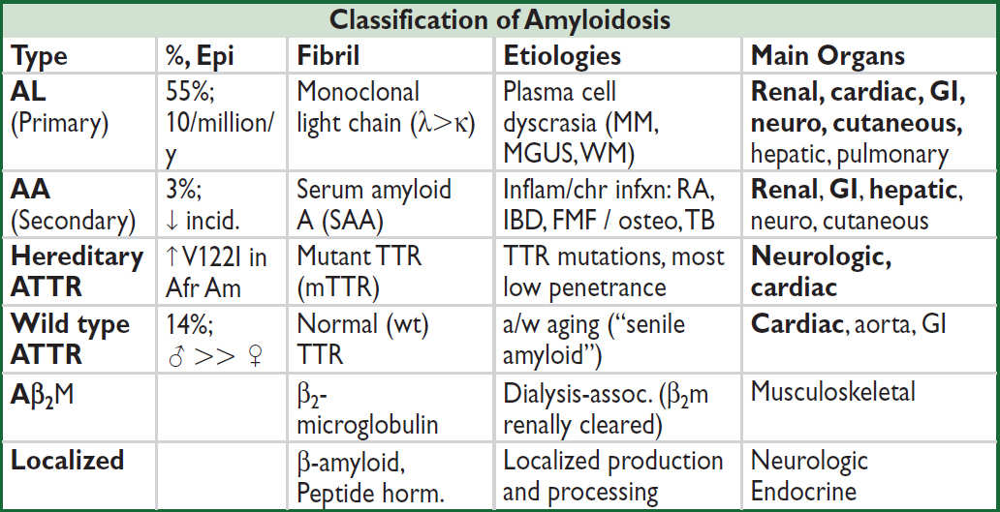

Major categories of inflammatory rheumatic disease
• Inflammatory arthritis: crystalline (gout, CPPD), RA, spondyloarthritis, adult-onset Still’s
• Connective tissue disease: SLE, Sjögren’s, scleroderma, myositides (DM, PM), MCTD
• Vasculitis: large (GCA, Takayasu’s); medium (PAN); small (ANCA, IgA, cryo); Behçet’s
• Other: IgG4-related disease, autoinflammatory disease (familial Mediterranean fever, TNF receptor-associated periodic syndrome, VEXAS = vacuoles, E1 enzyme, X-linked, autoinflammatory, somatic), sarcoid (see “ILD”), HLH/MAS, relapsing polychondritis
Approach to patient with joint pain
• Articular vs. periarticular (bursitis, tendinitis) source of pain: typically active ROM more painful than passive ROM in periarticular process
• Inflammatory vs. noninflammatory pain: features of inflammatory arthropathy include joint swelling, warmth or redness, prolonged morning stiffness (>30 min), improvement of pain/stiffness w/ motion/exercise. Assess for extra-articular features.
• Physical exam: localize complaint, identify signs of inflammation, and assess number and pattern of affected joints.
aMay initially present as arthralgia w/o overt arthritis. bRange of motion of joint or joint a/w bursa or tendon.
*WBC count of aspirated fluid in septic bursitis often < WBC count in septic arthritis.
Imaging features of major arthritides
• OA: plain films: asym joint space narrowing (JSN), osteophytes, subchondral sclerosis & cysts; subchondral “gull-wing” erosions may be seen in less-common erosive OA; MRI may show early disease not seen on plain films; U/S ≈ MRI for structural damage ⊖
• RA: plain films: symmetric JSN, early = periarticular osteopenia; late = marginal erosions; subluxations; MRI & U/S can detect early and subclinical disease; MRI ≈ U/S for erosions
• Gout: plain films: early = nonspec swelling; late = tophus, joint erosions w/ overhanging edges; U/S for detection of microtophi (double-contour sign); dual-energy CT (DECT): identify articular/periarticular UrA deposits vs. calcium deposits; MRI ≈ U/S for erosions
• Spondyloarthritis: e/o sacroiliitis: plain films: early = pseudo-widening SI joint space, late = sclerosis, erosions, ankylosis; SI MRI ↑ Se for early Δ; U/S ≈ MRI to detect enthesitis
INFLAMMATORY MARKER & AUTOANTIBODY TESTING
Inflammatory markers (Mod Rheumatol 2009;19:469; NEJM 1999;340:448)
• ESR: indirect measure of inflammation [↑ RBC aggregation due to acute-phase proteins (fibrinogen, Ig)]; slow to rise; may ↑ w/ age, preg., anemia, obesity, ESRD. Ddx for >100: malig. esp. MM, lymphoma; GCA or other vasculitis; endocarditis, TB, osteomyelitis.
• CRP: direct measure of inflammation (protein produced by liver, part of innate immune system); typically rises and falls before the ESR w/ treatment/resolution of process
Autoantibody testing (Best Pract Res Clin Rheumatol 2014;28:907)
• ANA (anti-nuclear Ab): screening test for Ab directed against nuclear proteins.
• Order ANA only when clinical suspicion for CTD b/c nonspecific: 1:40 (very low ⊕, 25–30% of healthy Pts); 1:80 (low ⊕, 10–15% of healthy Pts); ≥1:160 (⊕, 5% of healthy Pts). May be ⊕ in Pts prior to clin manifest (NEJM 2003;349:1526; Arthritis Res Ther 2011;13:1).
• If ANA ⊕ and high clinical suspicion for CTD, consider testing for Ab against dsDNA, Smith, Ro/La, RNP, Scl-70 and myositis-specific Abs (highly specific for various CTD)
• ANA does not correlate well w/ disease activity, ∴ no clinical value in serial testing
• ANA also ⊕ in: AIH, PBC, thyroid disease, certain infxns and malignancies, IBD, IPF
• RF and anti-CCP (see “Rheumatoid Arthritis”)
DDX & APPROACH TO COMMON INPATIENT RHEUM PRESENTATIONS
Feature |
Rheum Ddx |
Rheum Lab w/up (+ ANA) |
FUO |
GCA/PMR, AOSD, SLE, inflamm arthr, Taka- yasu, PAN, ANCA ⊕ vasc, cryo, HSP, VEXAS |
ESR, CRP, RF, ANCA, ± cryo |
Pulm HTN |
Scleroderma (limited >diffuse), MCTD, SLE, PM/DM (less common) |
Scl-70, centromere, RNA Pol III, RNP |
DAH |
ANCA ⊕ vasc, Goodpasture’s, SLE, APS |
ANCA, GBM, C3/C4, APLA |
ILD |
Scleroderma (diffuse >limited), sarcoid, RA, DM, PM, antisynthetase syndrome, Sjögren’s, MCTD, SLE (esp. pleura), ANCA ⊕ vasc (esp. MPA) |
Scl-70, RF/CCP, CK, aldolase, ± myositis specific Abs, Jo-1, Ro/La, ANCA |
Pleuro- pericarditis |
SLE, scleroderma, RA, MCTD, DM/PM, ANCA ⊕ vasc, Sjögren’s, AOSD, PAN |
dsDNA, RF/CCP, Sm, Ro/La, Scl-70, RNP, ANCA |
AKI + active sed. or CTD s/s |
SLE (GN or nephrotic), ANCA ⊕ vasc (GN), scleroderma renal crisis, Sjögren’s (RTA/TIN), PAN (infarct), HSP, Goodpasture’s, cryo, APS |
dsDNA, Sm, Ro/La, RNP, C3/C4, Scl-70, RNA Pol III, ANCA, GBM, cryos, APLA |
Neuropathy |
ANCA ⊕ vasc, SLE, Sjögren’s, cryo, sarcoid, RA, PAN |
Ro/La, ANCA, cryo RF/CCP, HCV, HBV |
Definition & epidemiology (Lancet 2016;388:2023)
• Chronic, symmetric, and potentially destructive inflammatory polyarthritis characterized by proliferative synovial tissue (pannus) formation in affected joints
• Pathogenesis involves overproduction of TNF, IL-1, and IL-6 (∴ used as drug targets)
• Risk stems from combination of genetics (~50% of risk), environmental influences (eg, smoking, silica dust), and Pt factors (periodontal disease, Δs in gut microbiome)
• HLA-DRB1 haplotype a/w disease suscept., severity, & response to Rx (JAMA 2015;313:1645)
• Prevalence = 1/100 adults and 1/20 ♀ >70 y; ♀ to ♂ ratio = 3:1; peak incidence 50–75 y
Clinical manifestations (JAMA 2018;320:1360)
• Usually insidious onset pain, swelling, & impaired function of joints w/ prolonged morning stiffness for ≥6 wk (typically PIPs, MCPs, wrists, knees, ankles, MTPs, cervical spine)
• Typically polyarticular (60% small joints, 30% large joints, 10% both), may be monoarticular (knee, shoulder, wrist) early in course; rheumatoid joints more susceptible to infection
• Joint deformities: ulnar deviation, swan neck (MCP flexion, PIP hyperextension, DIP flexion), boutonnière (PIP flexion, DIP hyperextension), cock-up deformities (toes)
• C1–C2 instability → myelopathy, ∴✓ C-spine flex/ext films prior to elective intubation
• Constitutional symptoms: low-grade fever, weight loss, malaise
• Extra-articular manifestations (18–41% of Pts) can occur at any time; ↑ frequency in seropositive (⊕ RF or anti-CCP) and w/ active disease (Autoimmun Rev 2021;20:102776)
Extra-Articular Manifestations |
|
Skin |
Rheumatoid nodules (20–30%, usually sero ⊕): extensor surface, bursae; can be in lung, heart, sclera Raynaud’s, pyoderma gangrenosum, cutan. vasculitis (ulcers, purpura, etc.) |
Pulm |
ILD (a/w MUC5B mutations), airway disease, pleuritis, effusions (low glc), nodules, pulm HTN; precedes joint sx in 20% of cases; RA med toxicity (MTX, ? anti-TNF, & anti-CD20) (Semin Arthritis Rheum 2014;43:613) |
CV |
Accel. athero w/ ↑ risk of MI & CV death, AF, pericarditis (effusions in ⅓ of sero ⊕), myocarditis, coronary/systemic vasculitis (Nat Rev Rheum 2020;16:361) |
Nervous |
Nerve entrapment (eg, carpal tunnel), stroke, mononeuritis multiplex, CNS vasculitis |
Ocular |
Scleritis, episcleritis, keratoconjunctivitis sicca (2° Sjögren’s) |
Heme |
Anemia of chronic disease, neutropenia (Felty’s syndrome: 1%, typically long- standing RA + splenomegaly; large granular lymphocyte leukemia: bone marrow infiltrated w/ lymphocytes ± myeloid hypoplasia), NHL, amyloidosis |
Renal |
Glomerulonephritis (usually mesangial), nephrotic syndrome (2° amyloidosis), nephrotoxicity from RA meds |
Vasculitis |
Small & medium vessels (usually ↑ RF titer, long-standing RA); pericarditis, ulcers, scleritis, & neuropathy most common |
Laboratory & radiologic studies
• RF (IgM/IgA/IgG anti-IgGAb) ⊕ in ~70%; also seen in other rheumatic diseases (SLE, Sjögren’s), cryoglobulinemia, infection (SBE, hepatitis, TB), ~5% of healthy pop.
• Anti-CCP (Ab to cyclic citrullinated peptide): ⊕ in ~70% of Pts w/ RA, similar Se, but more Sp (>90%) than RF particularly for early RA (Arth Rheum 2009;61:1472); a/w increased joint damage and low remission rates
• ~20% are seronegative (RF and anti-CCP negative)
• ↑ ESR/CRP but nl in ~30%; ⊕ ANA in ~40%; ↑ globulin during periods of active disease
• Radiographs of hands and wrists: periarticular osteopenia, bone erosions, joint subluxation
• Increasing use of MSK U/S to diagnose synovitis, tenosynovitis, and erosive disease
ACR/EULAR classification criteria (Arth Rheum 2010;62:2569)
• Used in clinical research, but not in clinical practice
• Relevant for Pts with ≥1 joint with synovitis not better explained by another disease
• Likelihood of RA ↑ w/ higher # (espec. ≥4) of small joints involved, ⊕ RF or anti-CCP (espec. high titer), ↑ ESR or CRP, and duration ≥6 wk
Management (Lancet 2017;389:2328 & 2338; JAMA 2018;320:1360)
• Early dx and Rx (esp DMARD) w/ frequent follow-up and escalation of Rx as needed with goal to achieve clinical remission or low disease activity
• ↓ time to remission ≈ ↑ length of sustained remission (Arthritis Res Ther 2010;12:R97)
• Sero ⊕ (eg, RF or anti-CCP) a/w aggressive joint disease & extraarticular disease
• At dx, start both rapid-acting agent (to acutely ↓ inflammation) and Disease-Modifying Anti- Rheumatic Drug (DMARD) (typically take 1–3 mo to have max effect)
NSAIDs or COX-2 inhibitors: ↑ CV risk, GI adverse events, AKI; consider starting w/ PPI
glucocorticoids: low dose (<20 mg/d oral) or joint injection
NSAIDs + glucocorticoids: ↑↑ GI events; give PPI and minimize long-term concurrent use
• DMARDs (see RA therapeutics below):
Methotrexate (1st line unless CKD, hepatitis, EtOH, or lung disease), alternatives include sulfasalazine (SSZ) or leflunomide; consider HCQ if mild disease
If inadequate response after 3 mo (despite DMARD dose escalation) consider:
combination Rx w/ other DMARDs (eg, “triple therapy” w/ MTX, SSZ, and HCQ) or
adding biologic (anti-TNF typically 1st line unless contraindication)
MTX/SSZ/HCQ non-inferior to etanercept/MTX (NEJM 2013;369:307)
JAKi: if fail biologics vs. initial DMARD, but ↑ serious side effect risk over abatacept or TNFi (see below) (Lancet 2018;391:2503 & 2513; NEJM 2020;383:1511; NEJM 2022;386:316)
• Given a/w CV morbidity/mortality, try to ↓ risk w/ lifestyle mgmt, lipid & DM screening
RA Therapeutics (Arth Care Res 2021;73:924) |
||
Class |
Drug |
Side Effects |
Traditional DMARDs |
Methotrexate (MTX) Leflunomide Sulfasalazine (SSZ) |
MTX: GI distress, stomatitis, ILD, myelosuppression, hepatotoxicity Supplement MTX ± SSZ w/ folate ✓ G6PD prior to SSZ |
Biologic DMARDs (all anti-TNF ≈ efficacy; if inadequate resp to anti- TNF try non-TNF) |
Anti-TNF: etanercept, infliximab, adali- mumab, certolizumab, golimumab CTLA4-Ig: abatacept Anti-IL-6R Ab: tocilizumab (studied as mono-Rx w/o MTX); sarilumab Anti-CD20: rituximab Anti-IL-1R: anakinra Never use 2 biologics together |
↑ risk bacterial/fungal/viral infxn ✓ TB, Hep B/C before starting Immunize against Zoster + Pneumococcus Anti-TNF: ? risk for CHF & CNS demyelinating disease Anti-IL-6R: risk of GI perf. Rituximab: infusion reaction |
Other |
Hydroxychloroquine (HCQ) JAKi: tofacitinib, baricitinib; upadacitinib (JAK1 selective) Rare: cyclosporine, azathioprine, gold |
HCQ: retinopathy, rash JAKi: infxn, ↑ LFTs, HTN, VTE, CV events, malignancy, death CsA: ↑ Cr, HTN, gum hyperplasia |
Adult-onset Still’s disease (J Autoimmun 2018;93:24)
• Rare autoinflammatory syndrome, <4/million per y incidence; ♂ = ♀ w/ bimodal typical onset 15–25 or 36–46 y; sx evolve over wks to mos
• Dx if 5 criteria are present & ≥2 major; exclude infxn, malig, other rheumatic, drug rxn
Major: fever ≥39°C for ≥1 wk (usually daily or twice daily high-spiking fever); arthralgias/ arthritis ≥2 wk; Still’s rash (qv); ↑ WBC w/ 80% PMN
Minor: sore throat; LAN; HSM; ↑ AST/ALT/LDH; negative ANA & RF
• Still’s rash (>85%): nonpruritic macular or maculopapular salmon-colored rash; usually trunk or extremities; may be precipitated by trauma (Koebner phenomenon), warm water
• Plain films: soft tissue swelling (early) → cartilage loss, erosions, carpal ankylosis (late)
• Treatment: NSAIDs; steroids; steroid-sparing (MTX, anakinra, anti-TNF, tocilizumab)
• Variable clinical course: 20% w/ long-term remission; 30% remit-relapse; ~50% chronic (esp. arthritis); ↑ risk of macrophage activation syndrome (life threatening)
Relapsing polychondritis (Rheumatology 2018;57:1525)
• Inflammatory destruction of cartilaginous structures; typical onset age 40–60, ♂=♀, <1/million per y incidence
• Subacute onset of red, painful, and swollen cartilage; ultimately atrophic & deformed
• Multiple sites of cartilaginous inflammation: bilateral auricular chondritis, nonerosive inflammatory arthritis, nasal chondritis, laryngeal or tracheal chondritis, valvulopathy. Ocular inflammation and cochlear/vestibular dysfxn also common.
• 40% of cases a/w immunologic disorder (eg, RA, SLE, vasc., Sjögren’s), cancer or MDS (including VEXAS; NEJM 2020;383:2628)
• Labs: ↑ ESR & CRP, leukocytosis, eosinophilia, anemia of chronic inflammation
• Bx (not req for dx): proteoglycan depletion, perichondrial inflammation and replacement with granulation tissue and fibrosis; immunofluorescence with Ig and C3 deposits
• Screen for pulm (PFTs, CXR/CT, ± bronch) and cardiac (ECG, TTE) involvement
• Rx guided by disease activity/severity: steroids 1st line; NSAIDs/dapsone for arthralgias, mild disease; MTX, AZA, or biologics steroid-sparing; cyclophosph if organ-threatening
Comparison of Gout and Pseudogout |
||
|
Gout (Rheumatology 2018;58:27) |
Pseudogout (NEJM 2016;374:2575) |
Acute clinical |
Sudden onset painful mono- articular arthritis (classically podagra [MTP of great toe]) or bursitis; frequently nocturnal May be polyarticular in subseq flares Can mimic cellulitis (esp in foot) |
Mono- or asymmetric oligoarthritis (esp knees, wrists, and MCP joints); rare axial involvement (eg, crowned dens syndrome) |
Chronic clinical |
Solid crystal deposition (tophus) in joints (esp. toes, fingers, wrists, knees) & tissue (esp. olecranon bursa, pinna, Achilles) |
“Pseudo-RA” w/ polyarticular arthritis w/ morning stiffness or “Pseudo-OA” |
Assoc. conditions |
Metabolic syndrome; CKD; CHF |
3 H’s: Hyper-PTH, Hypo-Mg, Hemochromatosis |
Crystal |
Monosodium urate (MSU) |
Calcium pyrophosphate dihydrate |
Polarized microscopy* |
Needle-shaped, negatively birefringent |
Rhomboid-shaped, weakly positively birefringent |
Radio- graphic findings |
Early = nonspecific tissue swelling Late = tophus, joint erosions w/ overhanging edges “Double contour sign” on MSK US DECT: UrA vs. Ca deposits |
Chondrocalcinosis: linear densities within articular cartilage; often found in menisci, fibrocartilage of wrist, hands, symphysis pubis |
Other |
a/w uric acid stones; urate nephropathy |
✓ Ca, Mg, Fe, ferritin, TIBC, UrA, PTH in young or severe cases |
*Crystals should be intracellular; infection can coexist with acute attacks, ∴ always ✓ Gram stain & Cx
GOUT
Definition & epidemiology (Rheumatology 2018;58:27; Lancet 2021;397:1843)
• Humans lack enzyme (uricase) to metabolize urate (end-product of purine metabolism)
• MSU crystal deposition promotes inflammation in joints and peri-articular tissue;
• Prev >1/30 American adults, ♂ >♀; peak incidence 5th decade; most common inflamm arthritis in ♂ over 30 y; rare in premenopausal ♀ (estrogens ↑ renal urate excretion)
Etiologies
• UrA underexcretion (85–90%): meds (eg, diuretics); idiopathic; ↓ renal function; obesity
• Uric acid (UrA) overproduction (10–15%): ↑ meat, seafood, EtOH, psoriasis, idiopathic, myelo- and lymphoproliferative disease, chronic hemolytic anemia, cytotoxic drugs, rare inherited enzyme defic, genetic variants (Nature Rev Rheumatol 2018;14:341)
Diagnosis
• ↑ UrA is not diagnostic; 25% of measurements nl during flare; ± ↑ WBC & ESR
• Arthrocentesis is gold standard: intracellular negatively birefringent needle-shaped MSU crystal. U/S w/ double-contour sign or dual-energy CT can aid non-invasive dx.
• 2015 ACR/EULAR Classification Criteria (Ann Rheum Dis 2015;74:1789) used 1° in research
Acute treatment (Arthritis Care Res 2020;72:744)
• Colchinine, NSAIDs, & steroids all 1st-line; choice guided by side effect profile/comorbidities. IL-1i (J Rheum 2019;46:1345) or ACTH if these contraindicated. Start Rx ASAP; continue until acute flare resolves; consider combo Rx if severe; rest/ice; self-limited w/in 3–21+ d w/o Rx.
• Continue urate-lowering therapy during attack if already taking
Acute Treatment for Gout |
||
Drug |
Initial Dose |
Comments |
NSAIDs (nonsel or COX-2 inhib) |
Full anti-inflammatory dose → tapering |
Gastritis & GIB risk. Avoid in CKD & CVD. ≈ efficacy among NSAIDs. |
Colchicine (PO; IV no longer available in U.S.) |
1.2 mg then 0.6 mg 1 h later → 0.6 mg bid |
N/V/diarrhea (w/ ↑ dose), marrow suppression, myopathy, neuropathy. ↓ dose in CKD (however, not nephrotoxic). |
Corticosteroids (PO, IA, IV, IM) |
eg, prednisone 0.5 mg/kg/d × 5–10 d ± taper |
Rule out joint infection 1st. Corticosteroid injection if <3 joints. |
ACTH (IM) |
eg, 100 IU IM ×1–2 doses |
↑ cost, ↓ s/e, limited data (Semin Arthritis Rheum 2014;43:648) |
IL-1 inhibitors (J Rheumatol 2019;46:1345) |
anakinra (100 mg SC qd × 3 d); canakinumab (150 mg SC × 1) |
↑↑ cost; anakinra a/w injection site pain Canakinumab approved in EU (Ann Rheum Dis 2012;71:1839; Arth Rheum 2010;62:3064) |
Chronic treatment (Arthritis Care Res 2020;72:744)
• Approach: if ≥2 attacks/y, polyarticular attack, tophus, joint erosions, GFR <60, or urolithiasis → start urate-lowering therapy + pharmacologic Ppx to ↓ risk of acute attacks
• Urate-lowering therapy (ULT): goal UrA <6 mg/dL; when starting ULT, always give with pharm Ppx as below; do NOT d/c during acute attack or due to AKI
• Pharmacologic prophylaxis: continue 6 mos w/ above Rx or longer if frequent attacks:
low-dose colchicine (~50% ↓ risk of acute flare; J Rheum 2004;31:2429), NSAIDs (less evidence; Ann Rheum Dis 2006;65:1312), low-dose steroids, IL-1 inhibitors
• Lifestyle Δs: ↓ intake of meat, EtOH, & seafood, ↑ low-fat dairy, wt loss, avoid dehydration
Urate-Lowering Therapy (Chronic Treatment for Gout) |
||
Drug (route) |
Mechanism |
Comments |
Allopurinol (PO) |
Xanthine oxidase inhibitor |
1st line; adjust starting dose in CKD; titrate ↑ q2–5wk; a/w rash, hypersensitivity syndrome (see below), BM suppression (avoid w/ AZA/6-MP), diarrhea, N/V, hepatitis; monitor CBC, LFT’s; not nephrotoxic max dose = 800 mg/d |
Febuxostat (PO) |
Nonpurine xanthine oxidase inhib |
2nd line; use if allopurinol intolerant; a/w ↑ LFT, rash, arthralgias, N/V; avoid w/ AZA/6-MP (BM suppress); start 40 mg, max dose = 120 mg/d |
Pegloticase (IV) |
Recombinant uricase |
For refractory tophaceous gout; infusion reactions (including anaphylaxis); Ab formation may limit use (JAMA 2011;306:711); avoid w/ G6PD deficiency |
Probenecid (PO) |
Uricosuric |
Rarely used; risk of urolithiasis |
• Allopurinol hypersensitivity syndrome: 10–25% mortality; incidence ~5/1000. ↓ risk w/ starting dose 100 mg/d if eGFR >40 or 50 mg/d if eGFR ≤40. Titrate by 100 mg/d (eGFR >40) or 50 mg/d (eGFR ≤40) q2–5 wk until UrA <6 mg/dL (dose can be >300 mg/d even in CKD). A/w HLA-B5801, esp. Han Chinese, Koreans, Thai; screen in these high-risk populations prior to initiating (Arthritis Care Res 2020;72:744; JAMA Intern Med 2015;175:1550).
CALCIUM PYROPHOSPHATE DIHYDRATE (CPPD) DEPOSITION DISEASE/PSEUDOGOUT
Definition (NEJM 2016;374:2575)
• Deposition of CPPD crystals w/in tendons, ligaments, articular capsules, synovium, cartilage; frequently asymptomatic
Etiologies (Nat Rev Rheumatol 2018;14:592)
• Most cases idiopathic; consider further metabolic eval in young (<50 y) and florid forms
• Metabolic (3 H’s): hemochromatosis; hyperparathyroidism; hypomagnesemia (esp. in Gitelman’s or Bartter’s syndromes)
• Joint trauma (incl. previous surgery); intra-articular hyaluronate can precipitate attacks
• Familial chondrocalcinosis (autosomal dominant disorder); early-onset, polyarticular dis.
Clinical manifestations
• Chondrocalcinosis: calcification of cartilage, resulting from CPPD crystal deposition in articular cartilage, fibrocartilage, or menisci
↑ incidence w/ age; can be asymptomatic; chondrocalcinosis in 20% >60 y at autopsy
• Pseudogout: acute CPPD crystal-induced mono- or asymmetric oligoarticular arthritis, indistinguishable from gout except through synovial fluid exam for crystals
location: knees, wrists, and MCP joints; rarely, axial (eg, crowned dens syndrome due to CPPD deposition at C1–C2)
precipitants: surgery, trauma, or severe illness
• Chronic forms: “pseudo-RA” and pyrophosphate arthropathy (resembles OA, can involve axial skeleton)
Diagnostic studies
• Arthrocentesis is gold standard: rhomboid shaped, weakly positively birefringent crystals (yellow perpendicular & blue parallel to axis on polarizer; see table above)
• Radiographs: see table above
Treatment (NEJM 2016;374:2575)
• Asymptomatic chondrocalcinosis requires no treatment
• Acute therapy for pseudogout: no RCTs, extrapolated from practice in gout; ∴ same as for gout, though colchicine not as effective
• If associated metabolic disease, Rx of underlying disorder may improve arthritis sx
• Low-dose daily colchicine or NSAID may be effective for prophylaxis or chronic arthropathy
Definition and classification system (NEJM 2016;374:2563)
• Spondyloarthritis (SpA): group of inflammatory disorders that share common clinical manifestations: inflammatory spine disease, peripheral arthritis, enthesitis (see below), and extra-articular manifestations (primarily ocular and skin disease)
• Seronegative = absence of autoantibodies
• Subtypes: ankylosing spondylitis (AS), psoriatic (PsA), reactive (ReA), IBD-assoc, juvenille SpA, and undifferentiated. Distinguished by axial vs. peripheral predominant involvement.
Epidemiology & pathogenesis (Nat Rev Rheumatol 2015;11:110)
• Prevalence 1/200 to 1/50 worldwide; AS and non-radiographic axial SpA most common
• HLA-B27 accounts for ~30% of attributable genetic risk but not required for diagnosis
• Environmental factors likely critical for disease, esp reactive arthritis (ie, infection)
Spondyloarthritis (SpA) Epidemiology and Key Presentation Features |
||
Disease |
Epidemiology |
Key Features |
Ankylosing spondylitis (AS) |
♂:♀ = 3:1; onset in teens to mid-20s (rare after 40 y) |
Progressive limitation of spinal motion, a.m. stiffness, buttock pain, “bamboo spine,” ⊕ Schober test |
Psoriatic arthritis (PsA) |
♂ = ♀; peak incidence 45–54 y; seen in 20–30% of Pts w/ psoriasis |
In 13–17% arthritis precedes skin findings by yrs; does not correlate with psoriasis activity; a/w HIV |
Reactive arthritis (ReA) |
♂ >> ♀; 20–40 y; 10–30 d after GI or GU infxn* in genetically susceptible host |
Arthritis, urethritis, and conjunctivitis. Most resolve w/in 12 mo. |
IBD- associated arthritis |
♂ = ♀; seen in 20% of IBD Pts; Crohn’s >UC |
Type I <5 joints: correlates w/ IBD activ. Type II >5 joints or axial disease: does not correlate w/ IBD activity |
*GU: Chlamydia, Ureaplasma urealyticum; GI: Shigella, Salmonella, Yersinia, Campylobacter, C. diff.
Major clinical manifestations (Lancet 2017;390:73)
• Inflammatory back pain: SI joints (sacroiliitis), apophyseal joints of spine
characterized by IPAIN (Insidious onset, Pain at night, Age of onset <40 y, Improves w/ exercise/hot water, No improvement w/ rest), a.m. stiffness, responsive to NSAIDs
• Peripheral arthritis: typically asymmetric, oligoarticular, large joints, lower >upper limbs; however, can be symmetric & polyarticular (thus, mimic RA), espec. in psoriatic arthritis
• Enthesitis: inflammation at site of tendon/ligament insertion into bone, esp Achilles, plantar fascia (calcaneal insertion), pre-patellar, elbow epicondyles
• Rigidity of spine: bamboo spine by X-ray, ankylosis due to progressive growth of bony spurs that bridge intervertebral disc
• Dactylitis: “sausage digit,” inflammation of entire digit (joint + tenosynovial inflamm)
• Uveitis: anterior uveitis most common extra-articular manifestation in seronegative SpA; usually unilateral and p/w pain, red eye, blurry vision, photophobia
Clinical assessment (Nat Rev Rheumatol 2021;17:109)
• Seronegative: rheumatoid factor and other autoantibodies usually ⊖; ± ↑ ESR/CRP
• HLA-B27: nonspecific, b/c common in general population (6–8%); most useful when high clinical suspicion but nl imaging; ⊕ 90% of Pts w/ AS, but only 20–80% in other SpA
• Axial disease physical exam
The following are not specific PEx findings but useful in monitoring disease during Rx:
Lumbar flexion deformity assessed by modified Schober’s test (⊕ if <5 cm ↑ in distance between a point 5 cm below the lumbosacral jxn and another point 10 cm above, when going from standing to maximum forward flexion)
T-spine mobility (extension) and kyphosis severity measured by occiput-to-wall distance (although occiput-to-wall distance also increased in osteoporotic kyphosis)
• Infectious evaluation for reactive arthritis (⊖ studies do not r/o)
GU: U/A, PCR of urine and/or genital swab for Chlamydia; urethritis usually due to Chlamydia infxn preceding arthritis, but can also see sterile urethritis post dysentery
GI: stool Cx, C. diff toxin. Consider HIV in workup for reactive or psoriatic arthritis.
• Radiology
MRI preferred for early detection of inflammation (sacroiliitis)
Plain films detect late structural changes (SI erosions/sclerosis)
Calcification of spinal ligaments w/ bridging symm syndesmophytes (“bamboo spine”)
Squaring and generalized demineralization of vertebral bodies (“shiny corners”)
Descriptions of skin manifestations
• Psoriasis: erythematous plaques with sharply defined margins often w/ thick silvery scale
• Circinate balanitis: shallow, painless ulcers of glans penis and urethral meatus
• Keratoderma blennorrhagica: hyperkeratosis of palms/soles, scrotum, trunk, scalp
• Erythema nodosum: red tender nodules in subcutan. fat (panniculitis), typically on shins Ddx includes idiopathic, infxn, sarcoid, drug rxn, vasculitis, IBD, lymphoma
• Pyoderma gangrenosum: neutrophilic dermatosis → painful ulcers w/ violaceous border Ddx incl. idiopathic, IBD, RA, heme and solid malignancies, MGUS, MDS, polycyth. vera
Psoriatic arthritis subtypes (Lancet 2018;391:2273 & 2285; Nat Rev Dis Primers 2021;7:59)
• Mono/oligoarticular (large or DIP joint, dactylitic digit): most common initial manifestation
• Polyarthritis (small joints of the hands/feet, wrists, ankles, knees, elbows): indistinguishable from RA, but often asymmetric
• Arthritis mutilans: severe destructive arthritis with bone resorption, esp. hands
• Axial disease: unilateral/asymmetric sacroiliitis
• DIP-limited: good correlation with nail pitting and onycholysis
Treatment approach (Arthritis Care Res 2019;71:2 & 2019;71:1285; NEJM 2021;385:628)
• Untreated disease may lead to irreversible structural damage and associated ↓ function
• Early physiotherapy beneficial
• Tight control of inflammation may improve outcomes (eg, in PsA; Lancet 2015;386:2489)
• NSAIDs: 1st line; rapidly ↓ stiffness and pain; prolonged, continuous administration may modify disease course but associated w/ GI and CV toxicity (Cochrane Database Syst Rev 2015;17:CD010952); may exacerbate IBD
• Intra-articular corticosteroids in mono- or oligoarthritis; limited role for systemic steroids, esp. for axial disease
• Conventional DMARDs (eg, MTX, SSZ, leflunomide): no efficacy for axial disease or enthesitis; may have role in peripheral arthritis, uveitis, and extra-articular manifestations
• Anti-TNFs: effective for both axial and peripheral SpA, improves function and may slow progression of structural changes; adalimumab or infliximab preferred if eyes involved
• Anti-IL17A (secukinumab, ixekizumab): for both AS and axial and peripheral PsA (NEJM 2015;373:1329 & 2534; Lancet 2015;386:1137)
• Anti-IL12/23 (ustekinumab) and anti-IL23 (guselkumab) for both axial & peripheral PsA (Lancet 2020;395:1115) but not axial SpA (Arthritis Rheumatol 2019;71:258)
• PDE-4 inhibitor (apremilast): effective in PsA refractory to conventional DMARD or as first-line (Rheumatology 2018;7:1253); a/w GI side effects and wt loss
• JAK inhibitor: for conventional DMARD- or anti-TNF-resistant peripheral and/or axial SpA (NEJM 2017;377:1525 & 1537; 2021;384:1227)
• Other:
Abx indicated in ReA if active GU infxn but not typically needed for uncomplicated enteric infx. Can consider prolonged abx for refractory Chlamydia ReA (Arthritis Rheum 2010;62:1298), but controversial.
Involve ophtho if suspect eyes affected (may need steroid drops or intravitreal injection)
Treat underlying IBD when appropriate
ETIOLOGIES & DIAGNOSIS OF INFECTIOUS ARTHRITIS
Etiologies (Curr Rheumatol Rep 2013;15:332)
• Bacterial (nongonococcal): early diagnosis and treatment essential
• Gonococcal (N. gonorrhea): consider in sexually active young adults
• Viral: parvovirus, HCV, HBV, acute HIV, Chikungunya; mainly polyarticular, may mimic RA
• Mycobacterial: monoarticular or axial (Pott’s disease)
• Fungal: Candida (esp. prosthetic joints), coccidiomycosis (valley fever), histoplasmosis
• Other: Lyme, Mycoplasma, Salmonella, Brucellosis, T. whipplei
Diagnosis (JAMA 2007;297:1478)
• H&P w/ poor sensitivity and specificity for septic arthritis
• Arthrocentesis in acute onset inflammatory monoarthritis to r/o septic arthritis; if possible, obtain fluid sample prior to starting antibiotics
• Do not tap through overlying infected area to prevent introducing infxn into joint space
• ✓ Fluid cell count w/ diff, Gram stain, bacterial culture, crystal analysis; WBC >50k
w/ PMN predominance suspicious for bact. infxn; crystals do not r/o septic arthritis!
BACTERIAL (NONGONOCOCCAL) ARTHRITIS
Epidemiology & risk factors (Infect Dis Clin North Am 2017;31:203)
• 1/50,000 incidence per year
• Immunocompromised host: DM, EtOH use, HIV, age >80, SLE, cancer, steroid use, etc.
• Damaged joints: RA, OA, gout, trauma, prior surgery/prosthetic, prior arthrocentesis (rare)
• Bacterial seeding: bacteremia especially secondary to IVDU or endocarditis; direct inoculation or spread from contiguous focus (eg, cellulitis, septic bursitis, osteomyelitis)
Clinical manifestations (JAMA 2007;297:1478; Lancet 2010;375:846)
• Acute onset monoarticular arthritis (>80%) w/ pain (Se 85%), swelling (Se 78%), warmth
• Location: knee (most common), hip, wrist, shoulder, ankle. In IVDU, tends to involve other areas including axial joints (eg, SI, symphysis pubis, sternoclavicular, manubrial joints).
• Constit. sx: fevers (Se 57%), rigors (Se 19%), sweats (Se 27%), malaise, myalgias
• Infection can track from initial site to form fistulae, abscesses, or osteomyelitis
• Septic bursitis must be differentiated from septic arthritis (intra-articular infection)
Additional diagnostic studies (JAMA 2007;297:1478)
• Synovial fluid: WBC usually >50k (Se 62%, Sp 92%) but can be <10k, >90% polys; Gram stain ⊕ in ~75% of Staph, ~50% of GNR; Cx ⊕ in >90%; synovial bx most sens.
• Leukocytosis (Se 90%, Sp 36%); elevated ESR/CRP (Se >90%)
• Blood cultures ⊕ in >50% of cases, ~80% when more than 1 joint involved
• X-rays of joints should be obtained but usually normal until after ~2 wk of infection when may see bony erosions, joint space narrowing, osteomyelitis, and periostitis
• CT & MRI useful esp. for suspected hip infection or epidural abscess
Treatment for native joints (IDCNA 2017;31:203)
• Prompt empiric antibiotics guided by Gram stain after surgical drainage. If Gram stain ⊖, empiric Rx w/ vancomycin; add anti-pseudomonal agent if IVDU or immunocompromised.
Common Microbes (by Gram stain) |
Population |
Initial Antibiotic Regimen (tailor based on Gram stain, cx, clin course) |
|
GPC clusters |
S. aureus (most common) |
Normal joints Prosthetic joints Damaged joints |
Vancomycin. Can later Δ to antistaphylococcal penicillin or cefazolin based on sensitivities. |
S. epidermidis |
Prosthetic joints Postprocedure |
||
GPC chains |
Streptococci |
Healthy adults Splenic dysfunction |
PCN-G or ampicillin |
GN |
Diplococci: N. gonorrhea |
Sexually active young adults |
Ceftriaxone or cefotaxime |
Rods: E. coli, Pseudomonas, Serratia |
IVDU, GI infection immunosupp, trauma elderly |
Cefepime or piperacillin/tazobactam + antipseudomonal aminoglycoside in IVDU |
|
• IV antibiotics × ≥2 wk followed by oral antibiotics; varies by clinical course & microbiology
• Joint must be drained, often serially w/ arthroscopy (larger joints, initial Rx) or arthrocentesis. Serial synovial fluid analyses should demonstrate ↓ in WBC and sterility.
• 10–15% mortality (up to 50% w/ polyarticular); depends on virulence, time to Rx, host
Prosthetic joint infections (Infect Dis Clin North Am 2012;26:29; CID 2013;56:e1)
• ↑ risk in first 2 y s/p procedure; rate generally low (0.5–2.4%); risk factors include obesity, RA, immunocompromised state, steroids, & superficial surgical site infxn
• Staphylococci (coag negative & S. aureus) in >50%; polymicrobial in 10–20%
• Early (<3 mo s/p surgery) or delayed (3–24 mo) onset of sx from microbe typically acquired during implantation; early w/ virulent (eg, MRSA) and delayed w/ less virulent organisms (eg, P. acnes, coag negative Staph) & more indolent presentation
• Late (>24 mo) onset typically related to secondary hematogenous seeding
• Diagnosis requires arthrocentesis; ESR & CRP (CRP Se 73–91%, Sp 81– 86%; NEJM 2009;361:787) can be helpful
• Requires prolonged abx (initial empiric regimen: vanc + 3rd/4th gen cephalosporin) for 6 wks (NEJM 2021;384:1991) & 2-stage joint replacement (retention a/w ~40% failure; CID 2013;56:182) or life-long suppressive abx. Consult ID & orthopedics.
DISSEMINATED GONOCOCCAL INFECTION (DGI)
Epidemiology (Infect Dis Clin North Am 2005;19:853)
• N. gonorrhea; most frequent type of infectious arthritis in sexually active young adults
• Normal host as well as Pts w/ deficiencies of terminal components of complement
• ♀:♂ = 4:1 historically, but now ↑ in ♂. Occurs in <3% of N. gonorrhea infxn; ↑ incidence w/ menses, pregnancy, postpartum, SLE; ↑ incidence in MSM.
Clinical manifestations
• Preceded by mucosal infection (eg, cervix, urethra, anus, or pharynx) that is often asx
• Two distinct syndromes, although Pts can have both:
Joint-localized: purulent arthritis (40%), usually 1–2 joints (knees >wrists >ankles)
Arthritis-dermatitis syndrome: triad of polyarthralgias, tenosynovitis, skin lesions
1) polyarthralgias: migratory joint pain, can affect small or large joints
2) tenosynovitis: pain/inflammation of tendon and its sheath in wrists, fingers, ankles, toes
3) skin lesions: gunmetal gray pustules with erythematous base on extremities & trunk
• Rare complications: Fitz-Hugh-Curtis syndrome (perihepatitis), pericarditis, meningitis, myocarditis, osteomyelitis from direct extension of joint-localized infection
Additional diagnostic studies
• Synovial fluid: WBC >50k (but can be <10k), poly predominant
Gram stain ⊕ in ~25%; culture ⊕ in up to 50% if done w/ Thayer-Martin media
• Blood culture: more likely ⊕ in arthritis-dermatitis syndrome; rarely in joint-localized disease
• Gram stain and culture of skin lesions occasionally ⊕
• Cervical, urethral, pharyngeal, rectal PCR or cx on Thayer-Martin media; ✓ Chlamydia
Treatment
• Ceftriaxone × 7–14 d w/ empiric doxycycline × 7 d for Chlamydia if co-infection has not been excluded (see STI)
• Joint arthroscopy/lavage may be required for purulent arthritis; rarely >1 time
OLECRANON & PREPATELLAR BURSITIS
Epidemiology & risk factors (Joint Bone Spine 2019;86:583)
• >150 bursae in the body; 2 most commonly infected are olecranon and prepatellar
• Most commonly (esp. superficial bursae) due to direct trauma, percutaneous inoculation, or contiguous spread from adjacent infection (eg, cellulitis)
• Other risk factors: recurrent noninfectious inflammation (eg, gout, RA), diabetes
• S. aureus (80%) most common, followed by streptococci
Diagnosis
• Physical exam: discrete bursal swelling, erythema, maximal tenderness at center of bursa with preserved joint range of motion
• Aspirate bursa if concern for infxn, ✓ cell count, Gram stain, bacterial cx, crystals
WBC >20k w/ poly predominance suspicious for bacterial infection, but lower counts very common (crystals do not rule out septic bursitis!)
• Assess for adjacent joint effusion, which can also be septic
• Do not tap through infected skin to avoid introducing infxn into bursa
Initial therapy
• Prompt empiric coverage for staphylococci and streptococci: PO abx acceptable for mild presentation; vancomycin if ill appearing; broaden spectrum based on risk factors
• Modify antibiotics based on Gram stain, culture results, & clinical course. Duration of Rx is 1–3 wks. Serial aspirations every 1–3 d until sterile or no reaccumulation of fluid.
• Surgery if unable to drain bursa through aspiration, evidence of foreign body or necrosis, recurrent/refractory bursitis w/ concern for infxn of adjacent structures
Centr, centromere; dcSSc, diffuse cutaneous systemic sclerosis; lcSSc, limited cSSc; IM, inflammatory myopathies; RF, rheumatoid factor; Sm, Smith (Primer on the Rheumatic Diseases, 12th ed., 2001; Lancet 2013;382:797; J Rheumatol 2015;42:558)
• Only order auto-Ab testing if clinical suspicion for CTD, the presence of auto-Ab without characteristic clinical findings ≠ diagnosis, and auto-Ab do not define a particular CTD
• Overlap syndromes may be reflected by multiple autoantibodies
see “Systemic Lupus Erythematosus” and “Rheumatoid Arthritis” for those diseases
SYSTEMIC SCLEROSIS AND SCLERODERMA DISORDERS
Definition & epidemiology (Best Pract Res Clin Rheumatol 2018;32:223)
• Scleroderma refers to the presence of tight, thickened skin
• Localized scleroderma: morphea (plaques of fibrotic skin), linear (fibrotic bands), “en coup de sabre” (linear scleroderma on one side of scalp and forehead ≈ saber scar)
• Systemic sclerosis (SSc) = scleroderma + internal organ involvement. High-mortality.
SSc w/ limited cutaneous disease (lcSSc): formerly CREST syndrome (see below)
SSc w/ diffuse cutaneous disease (dcSSc): often rapidly progressive skin thickening
SSc sine scleroderma (visceral disease without skin involvement, rare)
• Peak onset age 30–50; ♀ >♂ (8:1). Earlier/more severe disease in African Americans
• <6/100,000 annual SSc incidence wordwide; lcSSc incidence ~2× that of dcSSc
• Pathogenesis: unclear. Endothelial injury → ROS/oxidative stress → perivascular inflammation → fibrosis. Cytokines, growth factors, genetics, environ. factors + antibodies (against PDGFR, endo. cells, fibroblasts) may contribute (NEJM 2009;360:1989).
ACR/EULAR SSc classification criteria (Ann Rheum Dis 2013;72:1747)
• Sufficient for dx: skin thickening of fingers of both hands extending proximal to MCPs
• Other items considered in criteria: Raynaud’s, SSc-related auto-Ab, pulm hypertension (PHT) and/or ILD, abnormal nailfold capillaries, telangiectasia, fingertip lesions (ulcers, scars), skin thickening distal to MCPs
• Rule out other causes of thickened skin: diabetes (scleredema), scleromyxedema, toxin, hypothyroidism, nephrogenic systemic fibrosis, eosinophilic fasciitis, amyloidosis, GVHD
Clinical Manifestations of Systemic Sclerosis (Lancet 2017;390:1685) |
|
Skin |
Tightening and thickening of extremities, face, trunk (bx not req for dx) “Puffy” hands, carpal tunnel syndrome, sclerodactyly Nailfold capillary dilatation & dropout Immobile, pinched, “mouse-like” facies and “purse-string” mouth Calcinosis cutis (subcutaneous calcification), telangiectasias |
Arteries |
Raynaud’s phenomenon (80%); digital or visceral ischemia |
Renal |
Scleroderma renal crisis (SRC) = abrupt onset of HTN (relative to Pt’s baseline), MAHA. Urine sediment typically bland. Renal bx not required but would show “onion-skin” hypertrophy of arteries & arterioles. Affects 5–10%. ACEI effective (see below) but 40% still progress to ESRD and 5y-mortality is 40% (QJM 2007;100:485). Risks: dcSSc, early disease (⅔ of cases in 1st yr), >15 mg/d prednisone, RNA Pol III Ab. |
GI (>80% of Pts) |
GERD and erosive esophagitis, esophageal dysmotility (dysphagia, odynophagia, aspiration), gastric dysmotility, small intestinal dysmotility (malabsorption, bact overgrowth, bloating) |
Musculoskel |
Arthralgias/arthritis; myositis; joint contractures; tendon friction rubs |
Cardiac |
Myocardial fibrosis; pericardial effusion; conduction abnormalities; CAD |
Pulmonary |
Pulmonary fibrosis (typically develops w/in 4 y); pulmonary arterial hypertension (typically develops after many yrs); #1 cause of mortality |
Endocrine |
Amenorrhea and infertility common; thyroid fibrosis ± hypothyroidism |
Diagnostic studies & monitoring (Lancet 2017;390:1685)
• Autoantibodies: >95% Pts w/ auto-Ab; generally mutually exclusive
⊕ anti-Scl-70 (anti-topoisomerase 1): a/w diffuse SSc; ↑ risk pulm fibrosis
⊕ anticentromere: a/w limited SSc; ↑ risk of severe digit ischemia and PHT
⊕ anti-RNA-Pol III: a/w diffuse SSc; ↑ risk renal crisis; a/w cancer
⊕ ANA (>90%), ⊕ RF (30%), ⊕ anti-U1-RNP a/w overlap syndrome
Other: anti-Th/To (a/w limited SSc), U3-RNP (a/w ILD), PmScl (polymyositis-SSc overlap)
• CXCL4 levels reported to correlate w/ degree of fibrosis (NEJM 2014;370:433)
• At baseline: ✓ BUN/Cr & UA for proteinuria, PFTs (spirometry, lung volumes, DLCO), high- res chest CT (if diffuse disease), TTE (RVSP for PHT), RHC if ↑ RVSP or suspect PHT
• Annual PFTs; TTE q1–2y
• Skin bx not routine, but helpful to assess other possible causes for skin thickening
• ↑ risk of malignancy (esp. lung cancer) compared to general population
• Frequent (eg, daily) BP ✓ to monitor for HTN suggestive of scleroderma renal crisis
Treatment (Ann Rheum Dis 2017;76:1327; Arthritis Rheumatol 2018;70:1820)
• Minimize steroid exposure to reduce risk of renal crisis
• Interstitial lung disease: tocilizumab (Lancet Respir Med 2020;8:963), MMF (↓ toxicity vs. cyclophosphamide; Lancet Respir Med 2020;8:304); nintedanib (multikinase inhibitor/antifibrotic) a/w ↓ FVC decline (NEJM 2019; 380:2518).
PAH: pulmonary vasodilators (see “Pulm Hypertension”); early Rx a/w better outcomes
• Renal crisis: ACEI (not ARB) for Rx, not prophylaxis (Semin Arthritis Rheum 2015;44:687)
• GI: PPI/H2-blockers for GERD; promotility agents & antibx for bacterial overgrowth
• Cardiac: NSAIDs ± colchicine superior to steroids for pericarditis
• Arthritis: acetaminophen, NSAIDs, hydroxychloroquine, MTX
• Myositis: MTX, AZA, steroids
• Skin: PUVA for morphea. Pruritus: emollients, topical/oral steroids. Fibrosis: MTX; MMF? (Ann Rheum Dis 2017;76:1207; Int J Rheum Dis 2017;20:481). CYC if severe (NEJM 2006;354:2655).
• Auto-HSCT promising for severe disease (NEJM 2018;378:35)
RAYNAUD’S PHENOMENON
Clinical manifestations & diagnosis (NEJM 2016;375:556; Nat Rev Rheum 2020;16:208)
• Episodic, reversible digital ischemia, triggered by cold temp, or stress, classically: blanching (white, ischemia) → cyanosis (blue, hypoxia) → rubor (red, reperfusion); color Δ usually well demarcated; affects fingers, toes, ears, nose
Primary vs. Secondary Raynaud’s Phenomenon |
||
|
Primary (80–90%) |
Secondary (10–20%) |
Vessel wall |
Functionally abnl |
Structurally abnl |
Etiologies |
Idiopathic; however, can be exacerbated by comorbid conditions, including HTN, athero, CAD, DM |
SSc, SLE, PM-DM, MCTD, Sjögren’s, RA Arterial disease (athero, Buerger’s), trauma Heme (cyro, Waldenström’s, APS) Drugs (ergopeptides, estrogens, cocaine) |
Epidem. |
20–40 y; ♀ > ♂ (5:1) |
>35 y |
Clinical |
Mild, symm. episodic attacks. No tissue injury, PVD, or systemic sx; spares thumb. |
Severe, asymm. attacks; tissue ischemia & injury (eg, digital ulcers); can be assoc w/ systemic sx; may affect thumb or prox limbs |
Auto Ab |
⊖ CTD antibodies |
Depends on etiology, CTD Ab often ⊕ |
Nailfold |
Normal capillaroscopy |
Dropout and enlarged or distorted loops |
Treatment (Curr Opin Rheumatol 2021;33:453; Clin Rheumatol 2019;38:3317)
• All: avoid cold, maintain warmth of digits & body; avoid cigarettes, sympathomimetics, caffeine, & trauma; abx for infected ulceration
• Mild–mod: long-acting CCB, topical nitrates, SSRI, ARB, α-blockers, ASA/clopidogrel
• Severe: PDE inhibitors, anti-ET-1 receptor (if ulcers esp. w/ PHT), digital sympathectomy
• Digit-threatening: IV prostaglandins, digital sympathectomy, ± anticoagulation
INFLAMMATORY MYOPATHIES
Definition & epidemiology (NEJM 2015;372:1734; Lancet Neurol 2018;17:816)
• All lead to skeletal muscle inflammation & weakness, variable extramuscular involvement
• Polymyositis (PM): incidence <1/million/y; onset typically 40s–50s; ♀ >♂
• Dermatomyositis (DM): similar to PM but w/ skin manifestations; incidence ~1/million/y; also occurs in childhood; malignancy a/w PM (10%) and DM (24%)
• Necrotizing autoimmune myositis (NM): usually adults; risk factors: statin exposure (⊕ anti-HMGCR; NEJM 2016;374:664), CTD, cancer, rarely viral infection; incidence unclear
• Inclusion body myositis (IBM): age >50; ♂ >♀; incidence ~5/million/y; often misdiagnosed as PM
• Ddx: drug-induced toxic myopathy (statins, cocaine, steroids, colchicine); infxn (HIV, EBV, CMV); metabolic (hypothyroid, hypo-K, hypo-Ca); neuromuscular dis. (eg, myasthenia gravis); glycogen storage disease; mitochondrial cytopathy; muscular dystrophy
Clinical manifestations
• Muscle weakness: typically gradual onset (wks to mos) but often accelerated in NM (days to wks) and more insidious (yrs) in IBM; progressive and painless
DM/PM/NM: proximal and symmetric; difficulty climbing stairs, arising from chairs, brushing hair; fine motor skills (eg, buttoning) lost late
IBM: weakness may be asymmetric, distal, and involve facial muscles
• Skin findings in dermatomyositis: may precede myositis by mos to yrs
Gottron’s papules: seen in >80% of Pts & pathognomonic; violaceous, often scaly, areas symmetrically over dorsum of PIP and MCP joints, elbows, patellae, medial malleoli
Heliotrope rash: purplish discoloration over upper eyelids ± periorbital edema
Poikiloderma: red or purple rash w/ areas of hyper and hypopigmentation mostly on sun- exposed areas; upper back (shawl sign), neck & chest (V sign), and hips (Holster sign)
Mechanic’s hands: cracking, fissuring radial side of digits and can include pigmentation along palmar crease; a/w antisynthetase syndrome; also seen in PM
• Pulmonary: acute alveolitis, interstitial lung disease; resp muscle weakness; aspiration
Antisynthetase syndrome: acute onset DM or PM w/ rapidly progressive ILD, fever, weight loss, Raynaud’s, mechanic’s hands, arthritis; most commonly anti-Jo-1 ⊕
MDA5-assoc. DM: ↑ amyopathic, ↑ rapidly progressive ILD, palmar papules, skin ulcers
• Cardiac: (33%): often asx; conduction abnl; myo/pericarditis; HF uncommon; ↑ CK-MB/Tn
• GI: dysphagia, aspiration
• Polyarthralgias or polyarthritis: usually early, nonerosive; small joints >large joints
• Raynaud’s (30%, DM and overlap CTD) w/ dilatation & dropout of nail bed capillaries
Diagnostic studies (Ann Rheum Dis 2017;76:1955)
• ↑ CK (rarely >100,000 U/L, can be ↑↑↑ in NM), aldolase, SGOT, LDH; ± ↑ ESR & CRP
• Autoantibodies: ⊕ ANA (>75%)
⊕ anti-Jo-1 (25%): most common specific Ab; a/w antisynthetase syndrome
⊕ anti-Mi-2 (DM >PM 15–20%) is a/w disease that responds well to steroids
⊕ anti-SRP is a/w NM, poor Rx response; ⊕ anti-HMGCR in NM a/w statin exposure
Multiple others (Best Pract Res Clin Rheumatol 2018;32:887). Often ordered as an Ab panel.
• Consider EMG (↑ spontaneous activity, ↓ amplitude, polyphasic potentials w/ contraction) or MRI (muscle edema, inflammation, atrophy) for evaluation; may guide biopsy
• Pathology and muscle biopsy: all with interstitial mononuclear infiltrates, muscle fiber necrosis, degeneration, & regeneration (required for definitive diagnosis)
PM: CD8 T cell-mediated muscle injury; perivascular and endomysial inflammation surrounds MHC class I-expressing non-necrotic fibers
DM: immune complex deposition in blood vessels with complement activation; perifascicular atrophy w/ interfascicular and perivascular inflam (B & CD4 T cells)
NM: necrotic fibers w/ macrophages
IBM: T cell-mediated injury, vacuole formation; same as PM w/ eosinophilic inclusions and rimmed vacuoles and chronic myopathic changes (variable fiber size)
Treatment (Nat Rev Rheum 2018;14:279)
• Immunosuppression not effective for IBM. For all others:
• Steroids (prednisone 1 mg/kg); MTX or AZA early if mod/severe or taper fails (2–3 mo)
• For resistant (30–40%) or severe disease: AZA/MTX combo, IVIg (NM, DM ± PM), rituximab, MMF, cyclophosphamide (esp. if ILD or vasculitis)
• IVIg w/ pulse steroids acutely for life-threatening esophageal or resp muscle involvement
• ✓ for occult malignancy (esp. if DM); monitor respiratory muscle strength with spirometry
• NM: stop statin; steroids + MTX, RTX, or IVIg
SJÖGREN’S SYNDROME (NEJM 2018;378:931)
Definition & epidemiology
• Chronic dysfxn of exocrine glands (eg, salivary/lacrimal) due to lymphoplasmacytic infiltration, extraglandular manifestations common in primary form
• Can be primary or secondary (a/w RA, scleroderma, SLE, PM, hypothyroidism, HIV)
• ~1/1000 prevelance with 9:1 ♀:♂ ratio; typically presents between age 40 & 60
Clinical manifestations
• Dry eyes (keratoconjunctivitis sicca): ↓ tear production; burning, scratchy sensation
• Dry mouth (xerostomia): difficulty speaking/swallowing, dental caries, xerotrachea, thrush
• Parotid gland enlargement: intermittent, painless, typically bilateral
• Vaginal dryness and dyspareunia
• Recurrent nonallergic rhinitis/sinusitis due to upper airway gland involvement
• Extraglandular manifestations: arthritis, interstitial nephritis (40%), type I RTA (20%), cutaneous vasculitis (25%), PNS >CNS neurological disease (20%), ILD, PBC
• ↑ risk of lymphoproliferative disorders (~50× ↑ risk of lymphoma and WM in 1° Sjögren’s)
• Neonatal lupus, including fetal skin rash or heart block (a/w SSA and/or SSB antibodies)
Diagnostic studies
• Autoantibodies: ⊕ ANA (95%), ⊕ RF (75%)
Primary Sjögren’s: ⊕ anti-Ro (anti-SSA, ~50%) ± anti-La (anti-SSB, ~30%)
• Schirmer test: filter paper in palpebral fissures to assess tear production
• Rose-Bengal staining: dye that reveals devitalized epithelium of cornea/conjunctiva
• Ocular staining score: substitute for Rose-Bengal staining to determine degree of keratoconjunctivitis sicca using fluorescein and lissamine green
• Biopsy (minor salivary, labial, lacrimal, or parotid gland): lymphocytic infiltration
Classification criteria (≥4 points 96% Se & 95% Sp; Arthritis Rheumatol 2017;69:35)
• 3 points: ⊕ anti-Ro; labial saliv. gland bx w/ lymphocytic sialadenitis & score ≥1 foci/4 mm2
• 1 point: abnormal ocular staining score ≥5; Schirmer’s test ≤5 mm/5 min; unstimulated salivary flow rate of ≤0.1 mL/min
Treatment (Ann Rheum Dis 2020;79:3)
• Ocular: artificial tears, cyclosporine eyedrops, autologous tears
• Oral: sugar-free gum, lemon drops, saliva substitute, hydration, pilocarpine, cevimeline
• Systemic: depends on extraglandular manifest.; NSAIDs, steroids, DMARDs, rituximab
MIXED CONNECTIVE TISSUE DISEASE (MCTD)
Definition (Best Pract Res Clin Rheumatol 2016;30:95)
• Features of SLE, systemic sclerosis, and/or polymyositis that appear gradually over years and often evolve to a dominant phenotype of SLE or systemic sclerosis
• Different from undifferentiated CTD (UCTD): nonspecific symptoms that fail to meet criteria for any CTD; 30% go on to develop CTD over 3–5 y (usually SLE)
Clinical & laboratory manifestations (Rheumatology 2018;57:255)
• Raynaud’s phenomenon (qv) typical presenting symptom (75–90%)
• Hand edema (“puffy hands”), sclerodactyly, RA-like arthritis w/o erosions, polyarthralgias
• Pulmonary involvement (85%) with pulmonary hypertension, fibrosis
• Pericarditis most frequent cardiovascular manifestation; GI: dysmotility (70%)
• Membranous & mesangial GN common (25%); low risk for renal HTN crisis or severe GN
• ⊕ ANA (>95%); ⊕ RF (50%); requires ⊕ anti-U1-RNP but not specific (seen in ~50% SLE)
Treatment: as per specific rheumatic diseases detailed above
Definition and epidemiology (Nat Rev Rheumatol 2021;17:515)
• Multisystem inflammatory autoimmune disease with a broad spectrum of clinical manifestations in association with antinuclear antibody (ANA) production
• Prevalence 5–35/10,000 in U.S.; predominantly affects women 2nd to 4th decade
• ♀:♂ ratio = 8:1; African Americans affected 2–4× as often as Caucasians
• Complex genetics; some HLA association; rarely C1q & C2 deficiency
Classification Criteria (Ann Rheum Dis 2019;78:1151) for research/classification not dx |
||
Required criteria: ANA titer ≥1:80 AND ≥10 points (at least one clinical): |
||
Clinical domains (points*) |
||
Renal • proteinuria >0.5 g/d (4) • class II or V nephritis (8) • class III or IV nephritis (10) |
Hematologic • leukopenia (3) • thrombocytopenia (4) • autoimm. hemolytic anemia (4) |
Neuropsychiatric • delirium (2) • psychosis (3) • seizure (5) |
Mucutaneous • non-sclarring alopecia (2) • oral ulcers (2) • discoid lupus (4); subacute (4) or acute (6) cutaneous lupus |
Serosal • pleural/pericardial effusion (5) • acute pericarditis (6) |
Musculoskeletal • joint involvement (6) |
Constitutional • fever (2) |
||
Immunology domains (points*) |
||
Antiphospholipid antibodies • anti-CL, anti-B2GP1, or a lupus anticoagulant (2) |
Complement proteins • low C3 or C4 (3) • low C3 and C4 (4) |
SLE-specific Abs • anti-dsDNA or anti- Smith (6) |
*Within each domain, only the highest weighted criterion is counted toward the total score.
Autoantibodies in SLE (Nat Rev Rheumatol 2020;16:565) |
|||
Auto-Ab |
Frequency (approx) |
Clinical Associations |
Timeline |
ANA |
95–99% if active disease 90% if in remission Homogeneous or speckled |
Any or all of broad spectrum of clinical manifestations Sensitive but not specific |
May appear yrs before overt disease |
Ro La |
15–35% ⊕ anti-Ro may be seen w/ ⊖ or low titer ANA |
Sjögren’s/SLE overlap Neonatal lupus; photosens.; subacute cutaneous lupus |
|
ds-DNA |
70%; ~95% Sp; titers may parallel dis. activity, esp. renal |
Lupus nephritis Vasculitis |
Appears mos before or at dx, but may become ⊕ after dx |
Sm |
30%; very specific for SLE |
Lupus nephritis |
|
U1-RNP |
40% |
MCTD; Raynaud’s; Tend not to have nephritis |
|
Histone |
90% in DLE; 60–80% in SLE |
Mild arthritis and serositis |
At diagnosis |
Workup
• Autoantibodies: ANA, if ⊕ → ✓ anti-ds-DNA, anti-Sm, anti-Ro, anti-La, anti-U1-RNP
• CBC, APLA (⊕ in 20–40%; ACL, B2GP1, lupus anticoagulant), total complement, C3 & C4
• Lytes, BUN, Cr, U/A, urine sed, spot microalb:Cr ratio or 24-h urine for CrCl and protein
• If ↓ GFR, active sediment, hematuria, or proteinuria (>0.5 g/dL) → renal bx to guide Rx
Lupus Nephritis – 40% affected (Nat Rev Rheumatol 2020;16:255) |
||
Class |
Presentation |
Treatment (all benefit from HCQ) |
I: Min. mesangial |
Normal U/A & eGFR |
No specific treatment |
II: Mesangial prolif |
Micro hematuria/proteinuria |
No specific treatment ± ACEI |
III: Focal prolif |
Hematuria/proteinuria, ± HTN, ↓ GFR, ± nephrotic |
Induce: MMF or CYC + steroids Maintenance: MMF >AZA (NEJM 2004;350:971 & 2005;353:2219 & 2011;365:1886) |
IV: Diffuse prolif |
Hematuria/proteinuria and HTN, ↓ GFR, ± nephrotic |
|
V: Membranous (can coexist with class III or IV) |
Proteinuria, nephrotic |
ACEI If nephrotic-range proteinuria, induce w/ MMF + steroids Maintenance: MMF superior to AZA |
VI: Adv. Sclerotic |
ESRD |
Renal replacement therapy |
Prognosis (Nat Rev Rheumatol 2021;17:515)
• Overall mortality 2–3× higher than general population, higher in Blacks.
• Leading causes of morbidity/mortality: infection, CV events, renal failure (nephritis remission achieved in <50%; >10% end up w/ ESRD), neurologic events, thrombosis
Drug-induced lupus (DLE) (Drug Saf 2017;16:1255; Autoimmun Rev 2018;17:912)
• Many drugs: procainamide, hydralazine, penicillamine, minocycline, INH, methyldopa, quinidine, chlorpromazine, diltiazem, anti-TNF (esp. infliximab), interferons
• Abrupt onset; generally mild disease with arthritis, serositis, skin disease; renal dx, malar and discoid rash rare; prevalence ♀:♂ = 1:1
• ⊕ Anti-histone (95%) (may be ⊖ in anti-TNF); ⊖ anti-ds-DNA (often ⊕ in anti-TNF cases, even w/o manifestations of DLE) & ⊖ anti-Sm; normal complement levels
• Usually reversible w/in 4–6 wk after stopping medication
Definition & etiology (NEJM 2012;366:539; Nat Rev Rheumatol 2020;16:702)
• Characterized by tumor-like inflammatory lesions that can affect nearly any organ
• Etiology: ? autoimmune; unclear role of IgG4; may have h/o atopy
• ♂ >♀, mean age ~ 60. Incidence ~1/100,000 per y in Japan, but elsewhere unknown.
Clinical manifestations (Arthritis Rheumatol 2015;67:2466 & 2020;72:7)
• Commonly pancreatitis, aortitis, cholangitis, sialadenitis, thyroiditis, dacroadenitis, orbital myositis ± pseudotumor, retroperitoneal fibrosis, renal and lung involvement
• Insidious progression; multiple lesions may be present synchronously or metachronously
Diagnosis and management (Lancet Rheumatol 2019;1:e55)
• Biopsy w/ specific findings: lymphoplasmacytic infiltrate w/ significant IgG4+ plasma cell infiltrate, storiform fibrosis, obliterative phlebitis
• ↑ serum IgG4 (Se 90%, Sp 60%); may have low C3, C4
• Highly responsive to steroids but relapse common. Efficacy of DMARDs in maintenance remains unclear but B-cell depleting agents appear promising (Eur J Intern Med 2020;74:92).
OVERVIEW
• Inflammation w/in blood vessel walls causing end-organ damage often a/w systemic sx; may be primary or secondary (eg, infection, malignancy) in etiology
• Classified by size of predominant vessel affected (Arthritis Rheum 2013;65:1); overlap of vessel size affected is common
• Clinical manifestations based on size of vessels involved; constitutional sx (low-grade fever, fatigue, weight loss, myalgias, anorexia) common to all
TAK, Takayasu’s arteritis; GCA, giant cell arteritis; PAN, polyarteritis nodosa; ANCA-assoc. is GPA, EGPA, & MPA; IC, immune complex small-vessel vasculitis (eg, IgA, cryoglobulinemia); GN, glomerulonephritis.
LARGE-VESSEL VASCULITIS
Takayasu’s arteritis (“pulseless disease”)
• Arteritis of aorta and its branches → stenosis/aneurysm → claudication. Most often subclavian & innominate arteries (>90%); carotid, coronary, renal, or pulm a. (~50%)
• Epidemiology: most common in Asia; ♀:♂ ~9:1 in Japan but lower elsewhere; age <50 y. Prev 8/million in U.S. w/ ~4:1 ♀:♂ (J Rheumatol 2021;48:952).
• Clinical manifestations: systemic inflamm with fever, arthralgias, wt loss
Vessel inflamm w/ pain & tenderness, ↓ & unequal pulses/BPs in extremities, bruits, limb claudication, renovascular HTN (>50%), neurogenic syncope, Ao aneurysm ± AI
“Burnt out” or fibrotic period (eg, vascular stenosis)
• Dx studies: ↑ ESR (75%), CRP; arteriography (MRA, CTA) → occlusion, stenosis, irregularity, and aneurysms; carotid U/S Doppler studies; PET-CT; pathology → focal panarteritis, cellular infiltrate with granulomas and giant cells (bx not required for dx)
• Rx: steroids ± MTX, AZA, or anti-TNF; tocilizumab 2nd line (Ann Rheum Dis. 2020;79:19); ASA if critical cerebral stenosis; if surgical/endovascular revasc, preferably done in remission
• Monitoring: MRA, CTA, or PET-CT; ESR/CRP
Giant cell arteritis (GCA) (JAMA 2016;315:2442)
• Granulomatous arteritis typically involving aorta/branches; predilection for extracranial branches of carotid a., particularly temporal a. (thus also called temporal arteritis).
• Epidemiology: 90% >60 y, peak incidence at 70–80 y, extremely rare <50 y; ♀:♂ = 3:1. Prev 2/1000 of those age ≥50 (Semin Arthritis Rheum 2017;47:253).
• Clinical manifestations (NEJM 2014;371:50): constitutional sx: fevers, fatigue, wt loss
Temporal artery (TA) → headache, tender TAs and scalp, absent TA pulse
Ophthalmic artery (20%) → optic neuropathy, diplopia, amaurosis fugax, blindness
Facial arteries → jaw claudication
Large vessel vasculitis → intermittent claudication of extremities; thoracic aorta aneurysm
Strong association w/ PMR; ~50% of Pts w/ GCA ultimately received PMR diagnosis
• Dx: ↑ ESR (Se 84%, Sp 30%), ↑ CRP (Se 86%, Sp 30%), anemia.
Temporal artery bx (shows vasculitis & granulomas) whenever GCA suspected (Se ≤85%); consider bilat to ↑ yield (3–7% discordant). If bx ⊖ or suspect aortitis/large vessel involvement: U/S (halo sign) or MRA of temporal/cranial arteries, or CTA, MRA, or PET of aorta/large arteries (Arthritis Rheumatol 2021;73:1349). Some advocate imaging upfront to r/o, but requires imaging expertise (Ann Rheum Dis 2018;77:636 & 2020;79:19).
• Rx: steroids: do not await bx/path! Have >2 wks to bx w/o Δ. Pred 40–60 mg/d w/ slow taper; ASA if critical cerebral narrowing; consider IV steroids if vision threatened (Arthritis Rheumatol 2021;73:1349). Adding tocilizumab ↑ sustained remission (NEJM 2017;377:317).
• Polymyalgia rheumatica (JAMA 2016;315:2442; Lancet 2017;390:1700)
Prev 7/1000 of age ≥50. In 50% of GCA Pts; 15% of PMR Pts develop GCA. ♀:♂ ≈ 2.
ESR >40 mm/h (and/or ↑ CRP); bilateral pain & morning stiffness (>30 min), involving 2 of 3 areas: neck or torso, shoulders or prox. arms, hips or prox. thighs; nighttime pain; ± subdeltoid bursitis on U/S; exclude other causes of sx (eg, RA); nl CK
Rx: pred 12.5–25 mg/d; if clinical response, initiate slow taper. If not, consider alternate dx or ↑ dose. Consider MTX if at ↑ risk of steroid side effects (Ann Rheum Dis 2015;74:1799).
• Follow clinical status & ESR/CRP; ~⅓relapse over 2 y (J Rheum 2015;42:1213)
MEDIUM-VESSEL VASCULITIS
Polyarteritis nodosa (“classic” PAN) (Nat Rev Rheumatol 2017;13:381)
• Necrotizing nongranulomatous vasculitis of medium & small arteries (w/in muscular media) w/o glomerulonephritis or capillary involvement (ie, no DAH), not a/w ANCA
• Incidence ~2/million/y; ↑ in HBV-endemic areas; ♂ >♀; av. age ~50; 10% HBV-assoc
• Clinical manifestations (Arth Rheum 2010;62:616): const. sx (80%): wt loss, fever, fatigue
Neuro (79%): mononeuritis multiplex, peripheral neuropathies, stroke
Musculoskeletal (64%): extremity pain, myalgias, arthralgias, arthritis
Renal (51%): HTN, hematuria, proteinuria, renal failure; glomerulonephritis unusual
GI (38%): abd pain, GIB/infarction, cholecystitis; GU (25%): ovarian or testicular pain
Skin (50%): livedo reticularis, purpura, nodules, ulcers, Raynaud’s
Ophthalmic (9%): retinal vasculitis, retinal exudates, conjunctivitis, uveitis
Cardiac (22%): coronary arteritis, cardiomyopathy, pericarditis
Pulmonary: rare; if lung involvement, suspect other vasculitis
• Dx (Arthritis Care Res 2021;73:1061): ↑ ESR/CRP; r/o ANCA, HBV; ↓ C3/C4 if HBV-assoc.
Angiogram (mesenteric or renal vessels) → microaneurysms & focal vessel narrowing
CTA or MRA may be adequate for dx, but conventional angiogram is most sensitive
Biopsy (nerve, deep-skin, or affected organ) → vasculitis of small and medium a. w/ fibrinoid necrosis w/o granulomas
• Rx: based on severity; steroids ± DMARD (MTX, AZA; CYC if severe); antivirals if HBV. Most dis. monophasic so consider stopping DMARD if in steroid-free remission at 18 m.
ANCA-ASSOCIATED SMALL-VESSEL VASCULITIS
Microvascular vasculitis (eg, capillaries, postcapillary venules, & arterioles)
aPredominant type, can see either type (NEJM 2012;367:214). bGPA is formerly Wegener’s granulomatosis, EGPA is formerly Churg-Strauss. Microscopic polyangiitis (MPA).
Differential diagnosis of ANCA (Nat Rev Dis Primers 2020;6:71)
• anti-PR3: GPA, EGPA, microscopic polyangiitis (rarely), levamisole (contam. in cocaine)
• anti-MPO: microscopic polyangiitis, EGPA, GPA, drug-induced vasculitis, nonvasculitic rheumatic dis., levamisole (contaminant in cocaine)
• Atypical ANCA patterns: drug-induced vasculitis, nonvasculitic rheumatic diseases, ulcerative colitis, primary sclerosing cholangitis, endocarditis, cystic fibrosis
Granulomatosis with polyangiitis (GPA, formerly Wegener’s granulomatosis)
• Necrotizing granulomatous systemic vasculitis frequently affecting upper respiratory tract (nose, sinuses) in addition to kidneys, lower resp tract (lungs), and other organs
• Epi: incidence 12/million/y; any age but ↑ in young/middle-aged adults; ♂=♀
• Clinical manifestations
Constitutional: fever, fatigue, malaise, anorexia, weight loss
Respiratory (90%): Upper: recurrent sinusitis, rhinitis, oral/nasal ulcers, nasal crusting, saddle-nose deformity, otitis, hearing loss, subglottic stenosis Lower: infiltrates, nodules, & hemorrhage → cough, dyspnea, hemoptysis, pleurisy
Renal (80%): RPGN, microscopic hematuria (dysmorphic RBCs and casts)
Skin (50%): palpable purpura, livedo reticularis
Ocular (50%): episcleritis, scleritis, uveitis, orbital granulomas → proptosis, corneal ulcer
Neuro: cranial + peripheral neuropathies, mononeuritis multiplex.
Heme: ↑ incidence DVT/PE (20×) when disease active (Ann Intern Med 2005;142:620)
• Dx studies: 90% ⊕ ANCA (80% PR3, 20% MPO), less Se in limited upper-airway disease
CXR or CT → nodules, infiltrates, cavities; sinus CT → sinusitis ± bone erosions
↑ BUN & Cr, proteinuria, hematuria; sediment w/ RBC casts, dysmorphic RBCs
Biopsy → necrotizing granulomatous inflammation of arterioles, capillaries, veins. Renal bx w/ pauci-immune (minimal immune deposition) necrotizing and crescentic GN.
• Treatment: assess severity w/ BVAS/GPA score (Arth Rheum Dis 2009;68:1827)
Mild disease (no end-organ dysfxn; BVAS 0–3): MTX + steroids (Arth Rheum 2012;64:3472)
Severe disease (end-organ damage incl. pulm hemorrhage, RPGN etc.; BVAS >3):
Induction: [RTX 375 mg/m2/wk × 4 wk or 1000 mg on d1 + d15 or CYC 2 mg/kg/d × 3–6 mo or pulse 15 mg/kg q2–3 wk] + steroids 1 g IV × 3 d → ~1 mg/kg/d (Ann Rheum Dis 2015;74:1178). RTX preferred as ↓ toxicity (Arth Rheum 2021;73:1366).
Plasma exchange (PLEX) may ↓ risk of ESRD in those most at risk (NEJM 2020;382:622; Arth Rheum 2021;73:1366).
Adding avacopan (oral C5a receptor inhibitor) increases remission rate and allows ↓ steroids (NEJM 2021;384:599)
Maintenance: RTX q6mo superior to AZA or observ. (Ann Intern Med 2020;173:179)
Relapse: mild → steroids ± MTX or AZA; severe → reinduce w/ steroids + RTX or CYC
↑ ANCA w/o clinical evidence of flare should not prompt Δ Rx (Annals 2007;147:611)
Microscopic polyangiitis (MPA) (Rheum Dis Clin North Am 2010;36:545)
• Similar to GPA, but w/o ENT/upper airway involvement & nongranulomatous
• Epidemiology: incidence 4/million/y. ♂ = ♀; avg onset 50–60 y
• Clinical manifestations
Constitutional, neuro sx similar to GPA
Renal (80–100%): glomerulonephritis
Skin lesions (eg, palpable purpura) in 30–60%
Pulmonary (25–50%): pulmonary capillary alveolitis, pulmonary fibrosis
• Dx studies: 70% ⊕ ANCA (almost all anti-MPO)
Biopsy → necrotizing, nongranulomatous inflammation of small vessels, pauci-immune
Urine sediment and CXR findings similar to those seen in GPA
• Treatment: as for GPA (Arth Rheum 2021;73:1366); ↓ relapse rate compared to GPA
Eosinophilic granulomatosis with polyangiitis (EGPA, formerly Churg-Strauss)
• Similar to GPA w/ more frequent cardiac involvement, a/w asthma and eosinophilia
• Epi: rare (incidence 2/million/y); any age (typically 30–40 y); ♂ = ♀; a/w HLA-DRB4
• Clinical manifestations (Rheumatol 2020;59:iii84)
Initial sx: asthma, sinusitis, allergic rhinitis (new asthma in adult raises suspicion)
Eosinophilic infiltrative disease: transient pulm infiltrates, gastroenteritis, or esophagitis
Systemic small-vessel vasculitis: neuropathy (mononeuritis multiplex), renal (glomerulonephritis), skin (palpable purpura, petechial, nodules)
Cardiac: coronary arteritis, myocarditis, CHF, valvular insufficiency (Medicine 2009;88:236)
• Dx studies: 50% ⊕ ANCA (MPO >PR3), eosinophilia (>1500/uL or 10%, often >60%),
biopsy → microgranulomas, fibrinoid necrosis, small artery/vein thromboses w/ eosinophilic infiltrate
• Treatment: high-dose steroids + mepolizumab (anti-IL-5) (if nonsevere) or RTX or CYC (if severe) (Arth Rheum 2021;73:1366); mepolizumab for relapse/refractory (NEJM 2017;376:1921)
Renal-limited vasculitis
• Small vessel pauci-immune vasculitis causing RPGN w/o other organ involvement
• Dx studies: 80% ⊕ ANCA (MPO >PR3); biopsy with pauci-immune GN ± granulomas
• Treatment identical to that for GPA/MPA
IMMUNE COMPLEX (IC)–ASSOCIATED SMALL-VESSEL VASCULITIS
IgA vasculitis (formerly Henoch-Schönlein purpura [HSP]) (Rheumatol 2019;58:1607)
• IgA-mediated small-vessel vasculitis w/ predilection for skin, GI tract, and kidneys
• Epidemiology: incidence 140/million/y; ♂ >♀, children >adults, winter >summer
• May develop ~10 d after onset of upper resp infx or after drug exposure
• Clinical manifestations
Palpable purpura on extensor surfaces (lower extremity first) & buttocks
Polyarthralgias (nondeforming) esp. involving hips, knees, & ankles
Colicky abdominal pain ± GIB or intussusception
Nephritis ranging from microscopic hematuria & proteinuria to ESRD
• Dx studies: skin bx w/ immunofluorescence → leukocytoclastic vasculitis w/ IgA
and C3 deposition in vessel wall; renal bx → mesangial IgA deposition
• Treatment: often self-limiting over 4 wk; steroids ± DMARDs for renal or severe disease
Cryoglobulinemic vasculitis (Lancet 2012;379:348; Nat Rev Dis Primers 2018;4:11)
• Cryoglobulins: proteins that precipitate from serum or plasma on exposure to cold and redissolve on rewarming, characterized by their composition; a/w chronic immune stimulation and/or lymphoproliferation
• Distinguish from cryofibrinogenemia = proteins (eg, fibrin, fibrinogen) that precipitate only from plasma; found in autoimmune dis, malignancies, infxns; unclear clinical significance
Types of Cryoglobulinemia (J Autoimmun 2019;105:102313) |
|||
Feature |
Type I (monoclonal) |
Type II (mixed) |
Type III (mixed) |
Frequency |
10–15% |
50–60% |
25–30% |
Cryoglobulin composition |
Monoclonal Ig (usually IgM or IgG) |
Monoclonal IgM w/ RF activity + polyclonal IgG |
Polyclonal IgG and IgM |
Common etiologies |
Plasma cell dyscrasias |
Infection, malignancy, autoimmune syndromes |
Autoimmune synd., infxn |
Primary manifestations |
Hyperviscosity ± thrombosis → ischemia |
IC-mediated vasculitis, w/ multiorgan involvement. Can be asx. |
|
• Epidemiology: ~1/100,000, but prevalence varies with HCV rates; ♀ >♂
• Etiologies (idiopathic in ~10%)
Hematologic diseases: multiple myeloma, MGUS, Waldenström’s, chronic lymphocytic leukemia in type I; B-cell lymphomas or solid-organ malignancies in type II
Infxns (types II & III): viral (HCV [>80% RNA ⊕], HBV, HIV, HAV, EBV, CMV), bacterial (endocarditis, strep, etc.), fungal (coccidiomycosis, etc.), parasitic (malaria, amoebiasis)
Autoimmune syndromes (type III >II): Sjögren’s syndrome, SLE, RA, PAN
Renal transplant recipients (Clin Nephrol 2008;69:239)
• Pathophysiology
Type I: cryo precipitation in microcirculation → hyperviscosity & vascular occlusion
Types II/III: defective/insufficient immune complex (IC) clearance → IC-mediated inflammation of blood vessels w/ complement activation → vasculitis
• Clinical manifestations (most Pts w/o sx)
Type I: hyperviscosity (cold worsens sx) → HA, visual Δ, livedo, digital ischemia
Type II/III: vasculitis (not affected by cold) → fever, derm (54–80%; purpura, livedo reticularis, ulcers), arthralgia (44–70%; symmetric migratory, small/med joints), glomerulonephritis (50%; MPGN), neurologic (17–60%; peripheral neuropathy (polyneuropathy >mononeuritis multiplex), ↓ Hgb, ↓ plt, ↑ B-cell lymphoma risk, GI (5%; pain, HSM, ↑ LFTs). “Meltzer’s triad”: purpura, arthralgias, weakness in 25–30%.
• Dx studies
✓ Cryoglobulins (keep blood warmed to 37°C en route to lab to avoid false ⊖, loss of RF and ↓↓ C3, C4). Cryocrit quantifies cryoprotein but not always indicative of disease activity. May see false ↑ in WBC or plt on automated CBC due to precipitation.
Type I: ✓ serum viscosity, symptomatic if ≥4.0 centipoise; complement normal.
Type II: ↓ C4, variable C3, ↑ ESR, ⊕ RF. ✓ HCV, HBV, HIV in mixed cryoglobulinemia. Bx: hyaline thrombi; small vessel leukocytoclastic vasculitis w/ mononuclear infiltrate.
• Treatment (Blood 2017;129:289; J Inflamm Res 2017;10:49): Rx underlying disorder. Heme malig → chemoradiation; HCV → antivirals; CTD → DMARD/steroids ± RTX. Type I: plasma exchange if hyperviscosity; steroids, alkylating agents, RTX, chemo. For mixed cryo, steroids and RTX; CYC or plasma exchange for major organ involvement.
Connective tissue disease–associated vasculitis
• Small-vessel vasculitis a/w RA, SLE, or Sjögren’s syndrome
• Clinical sx: distal arteritis (digital ischemia, livedo reticularis, palpable purpura, cutaneous ulceration); visceral arteritis (pericarditis, mesenteric ischemia); peripheral neuropathy
• Dx studies: skin/sural nerve bx, EMG, angiography; ↓ C3, C4 in SLE; ⊕ RF, anti-CCP in RA
• Treatment: steroids, cyclophosphamide, MTX (other DMARDs)
Cutaneous leukocytoclastic angiitis (Arthritis Rheumatol 2018;70:171)
• Most common type of vasculitis; heterogeneous group of clinical syndromes due to IC deposition in capillaries, venules, and arterioles; includes hypersensitivity vasculitis
• Etiol: drugs (PCN, ASA, amphetamines, levamisole, thiazides, chemicals, immunizations, etc.); infection (Strep, Staph, endocarditis, TB, hepatitis); malignancy (paraneoplastic)
• Clinical manifestations: abrupt onset of palpable purpura and transient arthralgias after exposure to the offending agent; visceral involvement rare but can be severe
• Dx studies: ↑ ESR, ↓ complement levels, eosinophilia; ✓ U/A; skin biopsy → leukocytoclastic vasculitis w/o IgA deposition in skin (to distinguish from IgA vasculitis); if etiology not clear, consider ANCA, cryoglobulins, hepatitis serologies, ANA, RF
• Treatment: withdrawal of offending agent ± rapid prednisone taper
Behçet’s syndrome (Nat Rev Dis Primers 2021;7:67)
• Systemic vasculitis affecting all vessel sizes, venous and arterial, a/w painful oral and/or genital ulcers
• Epi: usually young adults (25–35 y); ♂ = ♀, ↑ severity in ♂; a/w HLA-B51; ↑ prev on old Silk Road (Turkey, Middle East, Asia) w/ 5 vs. 370/100,000 in U.S. vs. Turkey
• Classification criteria (#1 + ≥2 others is 91% Se & 96% Sp; Lancet 1990;335:1078)
1. Recurrent oral aphthous ulceration (≥3× in 1 y, usually 1st manifestation)
2. Recurrent genital ulceration (labia in females, scrotum in males)
3. Eye lesions: uveitis, scleritis, retinal vasculitis, optic neuritis; may threaten vision
4. Skin lesions: pustules, papules, folliculitis, erythema nodosum (scarring)
5. ⊕ pathergy test (prick forearm w/ sterile needle → pustule) (not sensitive in Caucasians)
• Other clinical manifestations: most recur but are not chronic
Arthritis: mild, ± symmetric, nondestructive, involving knees and ankles
Neurologic: usually involvement of midbrain parenchyma; peripheral neuropathy rare
Vascular: superficial or deep vein thrombosis (25%); arterial stenosis, occlusion, and aneurysm can also occur; low incidence of thromboembolism
• Dx studies: ↑ ESR/CRP; ulcer swab to r/o HSV; ulcer bx nonspecific; ophtho eval if sx
• Treatment (Ann Rheum Dis 2018;77:808)
Mucocutaneous: Mild: topical steroids, colchicine (esp. for erythema nodosum), dapsone, apremilast (PDE-4 inhib) for oral ulcers and ? genital ulcers (NEJM 2019;381:1918). Severe: oral steroids, steroid-sparing agents.
Arthritis: NSAIDs, colchicine, steroids, steroid-sparing agents
Ocular: topical and/or systemic steroids ± steroid-sparing agents
Steroid-sparing: AZA, anti-TNF, CYC (large vessel and CNS ds), CsA, MTX, IFNα-2A
Venous thrombosis: steroids and anticoagulation (careful if aneurysm present)
Immune-mediated diseases thought to result from overactivation of innate immunity
Familial Mediterranean fever (FMF) (Ann Rhem Dis 2016;75:644)
• Recessive MEFV mutations (activating pyrin, upstream of inflammasome)
• Febrile episodes for 1–3 d w/ abd pain (serositis, can mimic acute abdomen), pleurisy, lg joint monoarthritis/arthralgia, erysipelas-like skin lesions. Variable time between attacks.
• Epidemiology: ↑ prev in Armenians (1/500), Sephardic Jews, North Africans, Turks, Arabs; onset usually as child
• Risk of ESRD due to amyloidosis (AA), peritoneal adhesions, or infertility if untreated
• Colchicine effective prophylactic and ↓ amyloid; anti-IL1 is alternative (NEJM 2018;378:1908)
TNF receptor-associated periodic syndrome (TRAPS)
• TNF receptor mutations → febrile episodes q 5–6 wks each lasting >7 d w/ myalgia, abd pain/nausea, migratory rash, periorbital edema; risk of amyloidosis (AA)
• Epidemiology: autosomal dom. w/ variable penetr.; prev 1/million; onset usually as child
• Rx: steroid taper; NSAID alone if mild flare. If freq or severe flares, anti-IL1 (canakinumab) induction and maintenance (NEJM 2018;378:1908) appears more effective than anti-TNF
VEXAS (vacuoles, E1 enzyme, X-linked, autoinflammatory, somatic) syndrome
• Acquired/mosaic UBA1 (ubiquitylation enzyme on X chr) mutation in HSCs → myeloid + erythroid cytoplasmic vacuoles → heterogeneous but fever, cytopenias, chondritis, vasculitis, thrombosis, aveolitis, neutrophilic dermatoses common (NEJM 2020;383:2628)
• Epidemiology: ♂, mean onset age >60
• Steroids reduce symptoms but Rx otherwise unclear
Hemophagocytic lymphohistiocytosis (HLH)
• ↑↑ immune activity; failure to ↓ activated macrophages by NK cells/CTLs → ↑ cytokines (IFNλ, IL18) → macrophages phagocytize other blood cells, cytokine storm, organ failure
• Triggered by disruption of immune homeostasis: immune activation (infxn, autoimmune flare) or immunodeficiency; ~25% familial (mutations in perforin-mediated cytotoxicity)
• HLH 2/2 rheumatologic disease termed macrophage activation syndrome (MAS)
• Fever, ↑ spleen, cytopenias, ↑ TG, ↓ fibrinogen, ↑ LFTs, hemophagocytosis, ↓ NK cell activity, ↑ ferritin, ↑ soluble IL2R; H-score for HLH likelihood (Arthritis Rheum 2014;66:2613)
• Rx trigger (eg, rheum flare w steroids/biologics); if insufficient, HLH-04 protocol (etoposide + steroids ± CsA ± intrathecal MTX; BMT if genetic or relapsed/refractory; Blood 2017;130:2728), anti-IL1/IVIg/steroids (Lancet Rheumatol 2020:2:e358), or emapalumab (anti-IFNγ) (NEJM 2020;382:1811); high mortality if no Rx (Blood 2019;133:2465)
Deposition of misfolded proteins as insoluble fibrils (β-pleated sheets) in normal tissues

(NEJM 2007;356:2361; 2020;282:1567; Circulation 2020;142:e7; Nat Rev Dis Primers 2018;4:38)
Clinical Manifestations of Amyloidosis (Lancet 2016;387:2641; JAMA 2020;324:79) |
||
System |
Manifestations |
Amyloid |
Renal |
Proteinuria or nephrotic syndrome |
AL, AA |
Cardiac |
Restrictive CMP (↓ EF late), thick walls but ↓ QRS amplitude, conduction abnl, AF, syncope |
AL, mATTR, wt ATTR |
GI |
Diarrhea, malabsorption, protein loss; ulcers, hemorrhage, obstruction; macroglossia (dysphonia/dysphagia) |
All systemic |
Neuro |
Periph neuropathy w/ painful paresthesia; carpal tunnel; Autonomic neuro → impotence, dysmotility, ↓ BP |
mATTR, Aβ2M, AL, localized |
Skin |
Waxy, nonpruritic papules; periorbital ecchymoses; “pinch purpura” = skin bleeds with minimal trauma |
AL |
HSM |
Hepatosplenomegaly w/o hepatic dysfnx or cytopenias |
All systemic |
Endo |
Deposition with rare hormonal insufficiency |
localized |
MSK |
Arthralgias and arthritis (especially shoulder) |
AL, Aβ2M |
Pulm |
Airway obstruction; pleural effusions |
AL, AA |
Heme |
Factor X deficiency |
AL |
Diagnostic studies
• Biopsy (abd fat pad, rectal, etc.): apple-green birefring w/ Congo red (Se <85% Sp >90%)
• If suspect AL: SPEP & UPEP + immunofixation, free light chains, ± BM biopsy
• If suspect renal involvement: U/A for proteinuria
• If suspect CMP: ECG (↓ volt, conduction abnl), TTE (↓ longitudinal strain, LVH, valve & septal thickening, myocard. speckling), MRI (late gad. enhancement). R/o plasma cell dyscrasia; if ⊖ → (99m)Tc-pyrophosphate (PYP) SPECT for TTR. ± Cardiac bx.
• Mass spec of biopsy to ID fibril type. Genetic testing to distinguish wt vs. hereditary ATTR.
Treatment of Amyloidosis |
|
AL |
Limited involvement: high-dose melphalan → auto HSCT (NEJM 2007;357:1083) Not HSCT candidate: dara-CyBorD [daratumumab + CYC + bortezomib + dexameth.] (NEJM 2021;385:46). [Low-dose melphalan + D] if Bor not tolerated. Relapse: dara, ixazomib, Bor, or lenalidomide (Blood 2020;136:2620) |
AA |
Rx underlying disease. Colchicine for FMF, esp. to ↓ renal dis. ? Anti-cytokine Rx (anakinra or tocilizumab) (Clin Exp Rheumatol 2015;33:46; Amyloid 2017;24:189). |
ATTR |
Stabilize TTR tetramers: diflunisal slows neuropathy; tafamidis ↑ QoL, ↓ CV hosp/mortality (JAMA 2013;310:2658; NEJM 2018;379:1007) ↓ hepatic mut TTR production: siRNA (patisiran) or anti-sense oligo (inotersen) -improve neuropathy (NEJM 2018;379:11 & 22); CRISPR in trials (NEJM 2021;385;493) Liver transplant can benefit some mATTR forms (Muscle Nerve 2013;47:157) |
• Clearance of amyloid by Ab under study (NEJM 2015;373:1106; Br J Haematol 2020;189:228)
• Cardiac: diuretics; avoid CCB; ↑ dig toxicity risk (? amyloid binding); anticoag all AF
• Heart, kidney, and liver transplant may be considered in those w/ advanced disease
• Median survival: 5y AL (~6 m if CM); 11y AA; 4y wt ATTR & 2.5y ATTR V122I CM w/o Rx